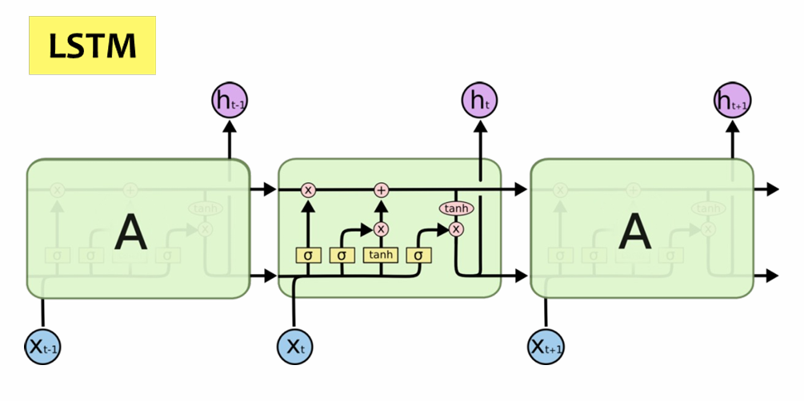
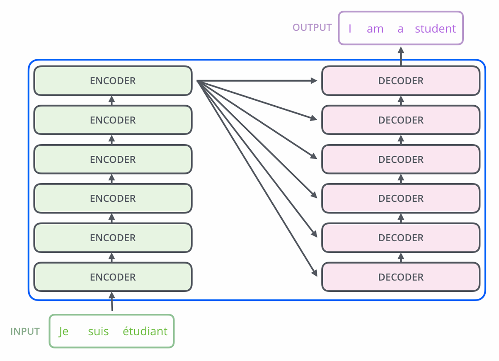
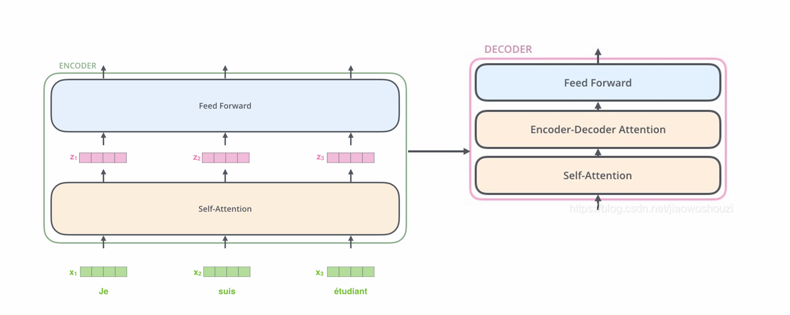

Natural Language Processing (NLP)
从 CFG、CYK 和朴素贝叶斯出发，过渡到词向量、RNN/LSTM 与 Transformer；正文保留原笔记内容，并优化为适合网页阅读的排版。
Reading Map
先用形式文法刻画句子结构，再用动态规划判断字符串是否可生成。
用词频、先验概率和文档稀有度做分类与检索。
把离散词映射到向量空间，距离关系开始带有语义。
从序列递推走到注意力机制，核心问题是如何建模上下文。
Natural Language Processing (NLP)
Context-Free Grammars
A context-free grammar (CFG) is a formal system used to describe the syntax of a language. It consists of a set of production rules that define how symbols can be combined to form valid sentences in the language.
Examples:
\[ \text{S} \rightarrow \text{NP} \; \text{VP}\\ \text{NP} \rightarrow \text{N} | \text{DN} \\ \]
CNF (Chomsky Normal Form)
A context-free grammar is in Chomsky Normal Form (CNF) if all production rules are of the form:
- A -> BC (where A, B, and C are non-terminal symbols)
- A -> a (where A is a non-terminal symbol and a is a terminal symbol)
- S -> \(\emptyset\) (where S is the start symbol and epsilon is the empty string)
CYK Algorithm
List all the possibilities in a staircase manner. Start with the smallest substrings and build up to the full string.
sentence = "baaba"
Phase 1: Fill terminals
Fill the table with the terminal symbols.
| b | a | a | b | a | |
|---|---|---|---|---|---|
| 1 | B | A,C | A,C | B | A,C |
| 2 | |||||
| 3 | |||||
| 4 | |||||
| 5 |
Phase 2: Combine length-2 substrings
Fill the table with non-terminal symbols based on the production rules.
| b | a | a | b | a | |
|---|---|---|---|---|---|
| 1 | B | A,C | A,C | B | A,C |
| 2 | S,A | B | S,C | S,A | |
| 3 | |||||
| 4 | |||||
| 5 |
For example, for X(3,4)="ab", X(3,4)= {AB, CB} = {AB, CB} = {S, C}.
Phase 3: Continue upward to the full string
Goes on.
| b | a | a | b | a | |
|---|---|---|---|---|---|
| 1 | B | A,C | A,C | B | A,C |
| 2 | S,A | B | S,C | S,A | |
| 3 | NaN | B | B | ||
| 4 | NaN | SAC | |||
| 5 | SAC |
For example, for X(2,4)="aab", X(2,4) = X(2,2)X(3,4) U X(2,3)X(4,4) = {A,C} {S,C} U {B} {B} = {S,A,C}.
Finally, we check if the start symbol S is in X(1,5). If it is, then the string "baaba" can be generated by the grammar.
Tokenization
Tokenization is the process of breaking down a text into smaller units called tokens. This is easy and obvious.
Statistical Language Models
Bag of Words (BoW)
Procedure: Data Collection → Dictionary Creation (Set of unique words) → Vectorization (Count the frequency of each word in the document)
Naive Bayes Classifier
The Naive Bayes Classifier is based on the Bayes Theorem that \[ P(B|A) = \frac{P(A|B) \times P(B)} {P(A)} \]
Let’s start with an example > \(P(☺|\text{My grandson loved it})\)
To solve this, we’re going to apply the Bayes law that is:
\[ P(☺|\text{My grandson loved it}) = \frac{P(\text{My}|☺) \times P(\text{grandson}|☺) \times P(\text{loved}|☺) \times P(\text{it}|☺) \times P(☺)}{P(\text{My grandson loved it})} \] But we can simplify the denominator by assuming it’s common for all classes (like \(P(\text{My grandson loved it})\) is essentially the same for all classes). So we can just compare the numerators. So we get:
\[ P(☺|\text{My grandson loved it}) \propto P(\text{My}|☺) \times P(\text{grandson}|☺) \times P(\text{loved}|☺) \times P(\text{it}|☺) \times P(☺) \]
Then we can use the given probabilities to calculate the result. For example: | Word | P(word|☺) | P(word|☹) | |–|–|–| My | 0.30 | 0.20 Grandson | 0.01 | 0.02 Loved | 0.32 | 0.08 It | 0.30 | 0.40
Laplace Smoothing is used to avoid zero probabilities. For example, if P(grandson|☺) = 0, then the whole product would be zero. So we add 1 to the numerator and V to the denominator.
\[ P(\text{grandson}|☺) = \frac{0 + 1}{\text{total words in ☺} + V}\\ \text{where V is the total number of unique words in the whole dataset} \]
tf-idf
How to spot the relevant article based on users’ inputs?
tf (term frequency) \[ \begin{aligned} tf(w) &= \frac{\text{Frequency of w in the given article}}{\text{Total word count in the given article}}\\ \\ \text{or, }tf &= \log(1+\text{raw count}) \end{aligned} \]
- idf (inverse document frequency) \[
idf(w) = \log\frac{N}{1+\text{Number of articles that contain w}}
\]
- N: the number of articles in the dataset.
this indicates the uniqueness of the word (like ‘the’ should have a low idf score because it appears in almost all articles).
Finally, \[tf.idf(w) = tf(w) \times idf(w)\]
Word2Vec
CBOW Model
C one hot vectors (V dim) -> W_VxN -> Mean -> W'_NxV -> softmax -> Output (V dim)
Loss: Cross entropy loss (one hot)Distance
'King' - 'Man' ~ 'Queen' - 'Woman'Neural Network NLP
RNN
The core of RNN: + Recurrent input & output + Hidden states
\[ \begin{aligned} h_t &= \tanh( \mathbf{W}_h h_{t-1} + \mathbf{W}_x x_t )\\ y_t &= f(h_t) \end{aligned} \]
Flowchart:
I love RNN Theory <EOS>
^ ^ ^ ^ ^
[h1]-[h2]----[h3]---[h4]----[h5]
| | | | |
<BOS> I love RNN TheoryDrawback: Hard to capture long-term dependencies. (gradient vanish/explode)
Optimized RNN: LSTM / GRU

Simple explanation of the LSTM figure:
Compared with a vanilla RNN, LSTM adds a long-term memory path, usually called the cell state \(c_t\), which is the upper horizontal line passing through the cell.
Inside the current cell, the yellow \(\sigma\) blocks are gates:
- Forget gate: decides how much old memory should be kept.
- Input gate: decides how much new information from \(x_t\) should be written into memory.
- Output gate: decides how much memory should be exposed as the hidden state \(h_t\).
The pink \(\times\) circles mean element-wise multiplication, so a gate can control how much information passes through. The pink \(+\) circle means adding the kept old memory and the new candidate memory together. The tanh block creates candidate information and also squashes the updated memory before producing the output.
In formula form, the picture corresponds to:
\[ \begin{aligned} f_t &= \sigma(W_f[h_{t-1}, x_t] + b_f) && \text{forget gate(rate)}\\ i_t &= \sigma(W_i[h_{t-1}, x_t] + b_i) && \text{input gate}\\ \tilde{c}_t &= \tanh(W_c[h_{t-1}, x_t] + b_c) && \text{candidate memory}\\ c_t &= f_t \odot c_{t-1} + i_t \odot \tilde{c}_t && \text{updated memory}\\ o_t &= \sigma(W_o[h_{t-1}, x_t] + b_o) && \text{output gate}\\ h_t &= o_t \odot \tanh(c_t) && \text{hidden state output} \end{aligned} \]
SOTA: Transformer
Attention is all you need


Self Attention Layer
Let’s assume that the French sentence “Je suis étudiant” has \(u\) words, and the English sentence “I am a student” has \(v\) words. So the input matrix is \(\mathbf{X}^{u\times d}\), and the output sentence is \(\mathbf{Y}^{v\times d}\), where \(d\) is the dimension of the word embedding vector.
3 Matrix: Query \(\mathbf{Q}^{d\times k}\), Key \(\mathbf{K}^{d\times k}\), Value\(\mathbf{V}^{d\times l}\). The value vector is \(l\) dimensional.
The self attention layer impose an transformation that \[ \mathbf{X}^{u\times d} \rightarrow\text{Self Attention Layer}\rightarrow\text{softmax}(\frac{\mathbf{XQK}^\mathrm{T}\mathbf{X}^\mathrm{T}}{\sqrt{d_k}})\mathbf{XV} \]
where the \((\mathbf{XQK}^T\mathbf{X}^T)^{u\times u}\) reflects the correlation between words pairs. And the finally output is words with correlation information embedded.
Feed Forward
is just a normal linear perception layer, maybe with a ReLU activation function in between.
Positional Encoder
Since self-attention layer do not incorporate positional information, we need to embed the word order into the input matrix. This can be done by simply adding a positional encoding matrix of the same shape as the input.
Encoder-Decoder Attention
This is very much similar to self-attention, except we have \(\mathbf{K}^{d\times k}\) and \(\mathbf{V}^{d\times l}\) matrices coming from the encoder.
Meanwhile, the \(\mathbf{YQ_{De}K_{En}}^T\mathbf{X}^T\) is \(v\times u\), representing the correlation between each pair of output and input words.
Other Techniques
Residual connection & Layer Normalization
Training: Mask
To train the model Once, you need to provide the following information
Encoder: Je suis étudiant <EOS>
Decoder: <BOS> I am a student
Answer: I am a student <EOS>Mask: this should be multiplied to the self-attention layer. The attention correlation inside the decoder shouldn’t be “fully forward looking”, because each word can only be predicted through earlier words. So we need to ‘mask’ future tokens. \[ \mathbf{YQ_{De}K_{De}}^T\mathbf{Y}^T\times \begin{pmatrix} 1 & 1 & 1 & 1 & 1 \\ 0 & 1 & 1 & 1 & 1 \\ 0 & 0 & 1 & 1 & 1 \\ 0 & 0 & 0 & 1 & 1 \\ 0 & 0 & 0 & 0 & 1 \end{pmatrix} \]
Conclusion: CNF, CYK, Naive Bayes, tf.idf, RNN, LSTM, Transformer.